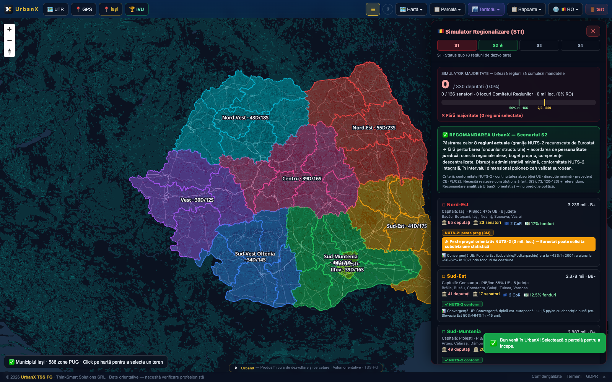

Analiză națională, modelare teritorială și suport pentru politici publice bazate pe date. UrbanX agregă date din toate cele 3.181 UAT-uri ale României pe aceeași infrastructură tehnică folosită la nivel de parcelă — de la un cartier, până la o regiune întreagă, aceleași motoare, aceeași sursă de adevăr. National analysis, territorial modeling and support for data-driven public policy. UrbanX aggregates data from all 3,181 local administrative units of Romania on the same technical infrastructure used at plot level — from a neighborhood, to an entire region, the same engines, the same source of truth.

Document de peste 400 de pagini, construit din 20 de module de conținut, pe granițe reale de județ — nu contururi ilustrative. A document of over 400 pages, built from 20 content modules, on real county boundaries — not illustrative outlines.
41 de județe + București, granițe din surse geo-spațiale oficiale.41 counties + Bucharest, boundaries from official geospatial sources.
Status-quo (8 regiuni), regiuni cu personalitate juridică (recomandat), provincii istorice, macro-regiuni.Status quo (8 regions), regions with legal personality (recommended), historical provinces, macro-regions.
330 deputați / 136 senatori / 15 CoR, apportionment pe scenariu, verificare conformitate NUTS-2.330 deputies / 136 senators / 15 Committee of the Regions seats, apportionment per scenario, NUTS-2 compliance check.
Populație · Locuințe · Urbanizare · Mobilitate · Fonduri · Energie · Emisii · Investiții — un minister nu gândește în proiecte individuale, ci în indicatori agregați la nivel național. Fiecare din cele de mai jos există deja, per UAT, cu formulă și sursă — sinteza națională într-un singur ecran este pasul următor, construit direct peste aceste piese deja funcționale. Population · Housing · Urbanization · Mobility · Funds · Energy · Emissions · Investments — a ministry doesn't think in individual projects, but in nationally aggregated indicators. Each of the below already exists, per local unit, with formula and source — the national synthesis in a single screen is the next step, built directly on these already-functional pieces.
Demografie INSE + necesar de locuințe, per UAT — agregabil pe regiune.National statistics demographics + housing need, per local unit — aggregatable by region.
GHSL — densitate urbană reală, evoluție 1975-2055, per UAT.GHSL — real urban density, 1975-2055 evolution, per local unit.
PMUD există per UAT; agregarea la nivel de rețea națională e pasul următor.SUMPs exist per local unit; aggregating them at national network level is the next step.
Absorbție și impact economic per regiune — parte din Studiul de Regionalizare.Absorption and economic impact per region — part of the Regionalization Study.
Indicatori ESG (CO₂, consum energetic) există per parcelă/proiect; agregarea națională e roadmap.ESG indicators (CO₂, energy consumption) exist per plot/project; national aggregation is on the roadmap.
Prioritizare automată a investițiilor (școli, parcuri, rețele) pe bază de indicatori de nevoie.Automatic investment prioritization (schools, parks, networks) based on need indicators.
60 de indicatori în 8 domenii — demografie, mediu, mobilitate, risc, imobiliar, indici compoziți.60 indicators across 8 domains — demographics, environment, mobility, risk, real estate, composite indices.
INSE, Eurostat, OSM, GHSL (densitate 1975-2055) — pe orice UAT selectat.National statistics, Eurostat, OpenStreetMap, GHSL (density 1975-2055) — for any selected local unit.
Fiecare UAT cu Masterplan generat pe aceeași structură — comparabile, nu eterogene.Every local unit's Masterplan generated on the same structure — comparable, not heterogeneous.
Simularea „dacă schimb această lege/prag" la nivel național, monitorizarea consolidată a tuturor UAT-urilor într-un singur dashboard ministerial, și prioritizarea automată a investițiilor pe indicatori de nevoie sunt pasul următor de dezvoltare. Fundația (indicatori reali, per UAT, cu sursă) există deja și funcționează — de aici construim stratul de decizie la nivel național. Simulating "what if I change this law/threshold" at national level, consolidated monitoring of all local units in a single ministerial dashboard, and automatic investment prioritization based on need indicators are the next development step. The foundation (real indicators, per local unit, with source) already exists and works — from here we build the national-level decision layer.
Studiile teritoriale (SPS) oferă bază documentată pentru argumentarea unei cereri de finanțare — nu presupuneri.The territorial studies (Strategic Planning Suite) provide a documented basis for arguing a funding application — not assumptions.
Live — document, nu automatizare de monitorizare PNRRLive — a document, not automated recovery-plan monitoringComparabili între UAT-uri pe aceeași metodologie, cu sursă și formulă vizibile.Comparable across local units on the same methodology, with visible source and formula.
Smart City, Locuire, Mediu, Turism — 87-98 pagini fiecare, deja scrise, adaptabile pe orice UAT.Smart City, Housing, Environment, Tourism — 87-98 pages each, already written, adaptable to any local unit.
Programăm o demonstrație pe un județ sau o regiune reală, sau primești un cont demo dedicat.We schedule a demonstration on a real county or region, or you get a dedicated demo account.